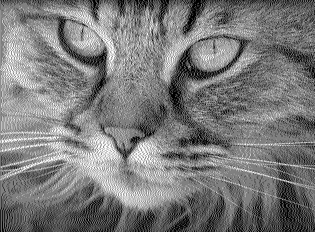

誤差拡散法
実行例

ソースコード
解説用（右に伝搬 / TypeScript）
{kind=link}
Floyd–Steinberg（左下/下/右下/右に伝搬 / TypeScript）
{kind=link}
解説/アルゴリズム
誤差拡散法は二値化と同じように画像を白黒に変換するアルゴリズムです。
二値化との違い
二値化ではあらかじめ決めておいた閾値をもとに白か黒に変換するかを判断します。
たとえば閾値が 127 以下の場合は 0(黒)に、そうでなければ 255(白)に変換するとルールを決めます。
対象のピクセルの明るさが 10 であれば 0 に、明るさが 240 であれば 255 になるという風に、対象のピクセルがもともと黒か白に近い明るさを真っ黒もしくは真っ白にするというのは納得がいきます。
しかし、たとえば値が 127 のような灰色の明るさならどうでしょう。 中間の明るさなのに閾値という単純なルールの比較だけで黒か白が決まるのでは、もともとの情報がかなり失われることになります。
明るさが 100 の場合は 0 に変換されますが、もともとの明るさと比較して 100 の差が出ます。 白に変換する場合でも同じで、たとえば値が 200 の場合、255 に変換されますが、55 の差が出ます。
このような本来の値との差を"誤差"と呼び、この誤差を隣接しているピクセルにわたし、そのピクセルの二値化を行う際、渡した誤差情報を含めて判定するのが誤差拡散法の特徴です。
つまり一つのピクセルではなく、周りのピクセルを含めて多角的に二値化の判定を行うと情報を減らさずに白黒にできるのではないか、というのがこのアルゴリズムの肝となります。
この変換方法では二値化と同じように白か黒に変換しないのにも関わらず、実際の変換画像を見ると灰色が使用されているように見えます。このように少ない色で多くの明るさがあるかのように見せる仕組みを “ディザリング“ と呼びます。
右に誤差を渡す
gray += prev; // 左のピクセルから受け取った明るさを自身に足す
let c = p.color("#000");
if (threshold < gray) {
// 閾値以上なので該当のピクセルを白にする
c = p.color("#fff");
// 白(255)にするのでその値までの誤差を算出する
prev = gray - 255;
} else {
// 閾値以上なので該当のピクセルを黒にする
// 黒(0)にするのでその値までの誤差を算出する
prev = gray;
}
右に誤差を伝播させるコード例です。
実行結果はモアレが目立つので実用的ではありませんが、誤差の伝播を説明するにはわかりやすいと思うのでまずはこの条件で説明します。
例えば明るさが 200 の場合 255 に変換されますが、誤差は-55 となります。
これは白(255)に変換されたが本来の値はこれよりも-55 の値なのでその誤差情報-55を右のピクセルに渡して加味させます。
黒に変換する場合も同様で、例えば明るさが 100 の場合、誤差は 100 となります。
黒(0)に変換されたが本来の値はこれよりも 100 大きい値なのでその誤差情報+100を右のピクセルに渡して加味させます。
 右に伝搬する場合の実行結果です。
Floyd–Steinberg（左下/下/右下/右に誤差を渡す）
| 1 | 2 | 3 |
|---|---|---|
| - | - | - |
| - | * | 7/16 |
| 3/16 | 5/16 | 1/16 |
- 右に 7/16
- 左下に 3/16
- 下に 5/16
- 右下に 1/16
Floyd–Steinberg はディザリングで最も有名な誤差分配です。
for (let y = 0; y < image.height; y++) {
for (let x = 0; x < image.width; x++) {
// ...
}
}
画像の走査は左から右、上から下に行うのが前提となります。
Floyd–Steinberg 法で伝搬する場合の実行結果です。
コード例
import * as p5 from "p5";
new p5((p: p5) => {
let image: p5.Image;
p.preload = () => {
image = p.loadImage("./0.jpg");
};
p.setup = () => {
p.createCanvas(p.windowWidth, p.windowHeight);
image.loadPixels();
// 誤差情報を格納する二次元配列
const error: number[][] = [];
for (let y = 0; y < image.height; y++) {
error[y] = [];
for (let x = 0; x < image.width; x++) {
error[y][x] = 0;
}
}
// 二値化のしきい値
const threshold = 127;
// 画像の全ピクセルを走査
// 走査は左から右、上から下に行う
for (let y = 0; y < image.height; y++) {
for (let x = 0; x < image.width; x++) {
// 対象のピクセルを取り出す
const color = getPixel(x, y);
// 取り出したピクセルからRGBを抽出
const r = p.red(color);
const g = p.green(color);
const b = p.blue(color);
// ピクセルの明るさとしてグレースケールを利用する
let gray = 0.299 * r + 0.587 * g + 0.114 * b;
// 明るさに別ピクセルで発生した誤差情報を加味
gray += error[y][x];
// 二値化計算
let value = 0;
if (threshold <= gray) {
value = 255;
}
// 本来の値との誤差を計算
// Floyd–Steinberg法では誤差*n/16の値を渡すので、先に16で割っておく。
const e = (gray - value) / 16;
// 誤差を渡す方向が範囲内なら該当のピクセルの誤差情報配列に誤差を加味させる
// 上で既に16で割っているので、分子の値だけ掛ければよい。
if (onBoard(x + 1, y)) {
error[y][x + 1] += e * 7;
}
if (onBoard(x - 1, y + 1)) {
error[y + 1][x - 1] += e * 3;
}
if (onBoard(x, y + 1)) {
error[y + 1][x] += e * 5;
}
if (onBoard(x + 1, y + 1)) {
error[y + 1][x + 1] += e;
}
// 対象のピクセルの色を白か黒に変換
setPixel(x, y, [value, value, value]);
}
}
image.updatePixels();
p.image(image, 0, 0);
};
function onBoard(x: number, y: number): boolean {
return 0 <= x && x < image.width && 0 <= y && y < image.height;
}
function getPixel(x: number, y: number): number[] {
const i = (y * image.width + x) * 4;
return [
image.pixels[i],
image.pixels[i + 1],
image.pixels[i + 2],
image.pixels[i + 3],
];
}
function setPixel(x: number, y: number, color: number[]): void {
const i = (y * image.width + x) * 4;
image.pixels[i + 0] = color[0];
image.pixels[i + 1] = color[1];
image.pixels[i + 2] = color[2];
}
});